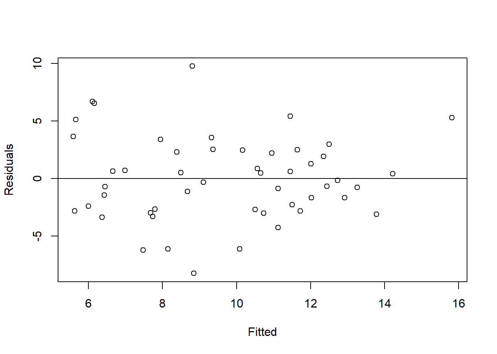
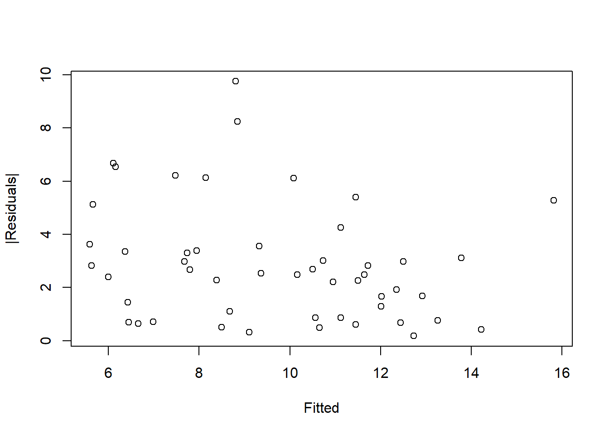
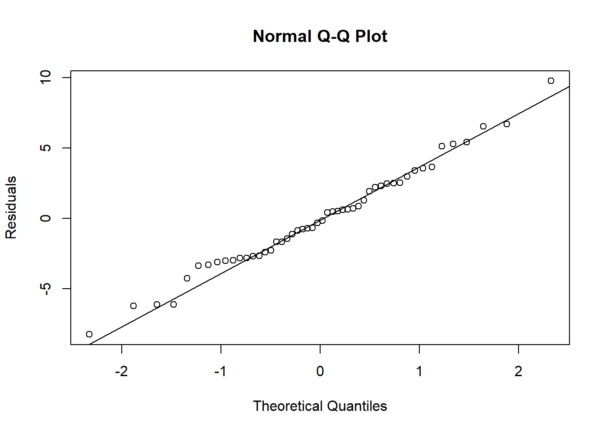
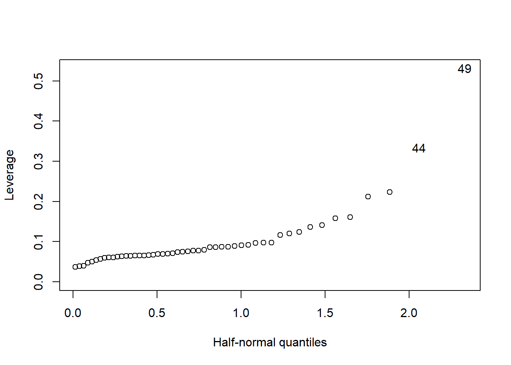
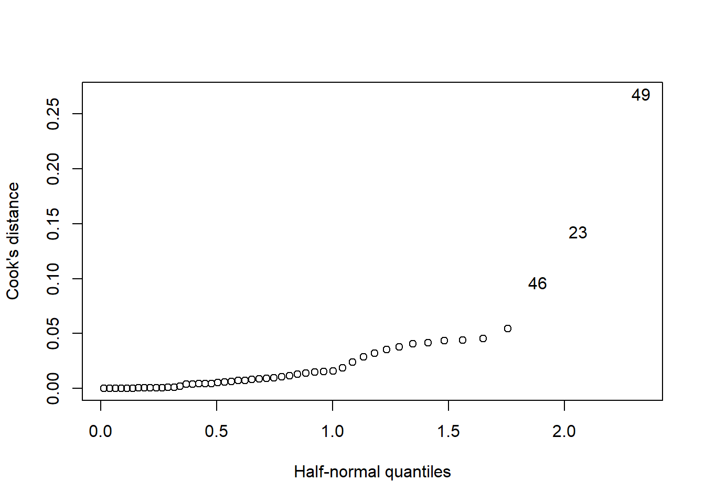
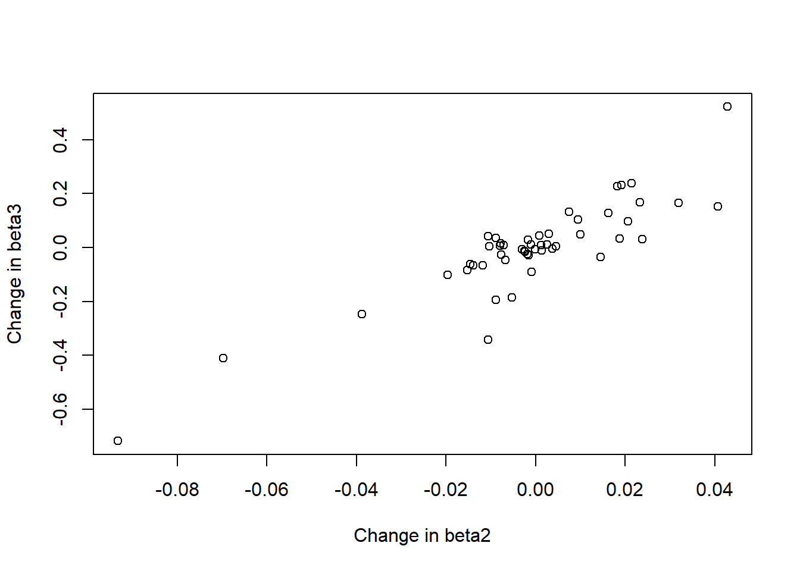
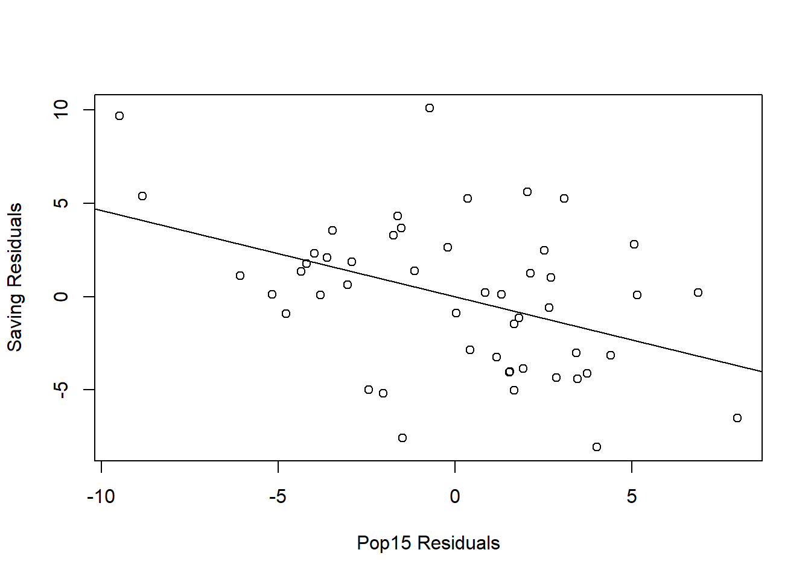

Chapter 5 Diagnostics
5.1 Checking Error Assumptions
5.1.1 Constant Noise Variance
Residual plot plots residuals \(\hat{\varepsilon}_i\) against predictions \(\hat{y}_i\). It can be used to check
Linear mean: linear model (i.e., \(\mathbb{E}[Y|X]=X\boldsymbol{\beta}\)) implies \(\textrm{Cov}(\hat{\boldsymbol{\varepsilon},\hat{\boldsymbol{y}}})=\widehat{\textrm{Cov}}(\hat{\boldsymbol{\varepsilon}},\hat{\boldsymbol{y}})=0\). So, the plot should display no pattern but appear as a evenly spread horizontal band of points with mean zero.
For population covariance, notice \[ \textrm{Cov}(\hat{\boldsymbol{\varepsilon}},\hat{\boldsymbol{y}}) = \textrm{Cov}((I-H)\boldsymbol{y},H\boldsymbol{y}) = (I-H)\textrm{Var}(\boldsymbol{y})H^\top=\sigma^2(I-H)H^\top = 0 \] where \(H\) is the hat matrix \(X(X^\top X)^{-1}X^\top\).
This derivation used the homoscedasticity and independence of the noise distribution.
For sample covariance, recall \(\sum_{i\in[n]}\hat{\varepsilon}_i=0\) as \(\hat{\boldsymbol{\varepsilon}}\in\mathcal{C}(X)^\perp\) and \(\mathbb{1}\in\mathcal{C}(X)\). Then, we have \[ \sum_{i\in[n]}(\hat{\varepsilon}_i-\bar{\hat{\varepsilon}})(\hat{y}_i-\bar{\hat{y}}) = \sum_{i\in[n]}\hat{\varepsilon}_i(\hat{y}_i-\bar{\hat{y}}) = \sum_{i\in[n]}\hat{\varepsilon}_i\hat{y}_i=\hat{\boldsymbol{\varepsilon}}^\top\hat{\boldsymbol{y}} = \boldsymbol{y}^\top(I-H)H\boldsymbol{y} = 0. \] This derivation is independent of the noise distribution as all elements are determined by the algorithm.
Homoscedasticity and heteroscedasticity: whether the dispersion of \(\hat{\varepsilon}_i\) is constant (resp. increases) in \(\hat{y}_i\) for homoscedasticity (resp. heteroscedasticity).
library(faraway)
data(savings)
result <- lm(sr ~ pop15 + pop75 + dpi + ddpi, savings)
plot(result$fitted, result$residual, xlab="Fitted", ylab="Residuals") # ehat v.s. yhat
abline(h=0)

##
## Call:
## lm(formula = abs(result$residual) ~ result$fitted)
##
## Residuals:
## Min 1Q Median 3Q Max
## -2.8395 -1.6078 -0.3493 0.6625 6.7036
##
## Coefficients:
## Estimate Std. Error t value Pr(>|t|)
## (Intercept) 4.8398 1.1865 4.079 0.00017 ***
## result$fitted -0.2035 0.1185 -1.717 0.09250 .
## ---
## Signif. codes: 0 '***' 0.001 '**' 0.01 '*' 0.05 '.' 0.1 ' ' 1
##
## Residual standard error: 2.163 on 48 degrees of freedom
## Multiple R-squared: 0.05784, Adjusted R-squared: 0.03821
## F-statistic: 2.947 on 1 and 48 DF, p-value: 0.0925- The last method regress \(|\hat{\varepsilon}_i|\)3 onto \(\hat{y}_i\) and test \(H_0:\beta_1=0\) v.s. \(H_A:\beta_1\neq 0\).
5.1.2 Checking Noise Normality
5.1.2.1 QQ-plot
- Sort the residuals \(\hat{\varepsilon}_{[1]}\leq \hat{\varepsilon}_{[2]}\leq \dots\leq \hat{\varepsilon}_{[n]}\) — order statistic
- Compute the \(n\) percentiles \(u_i = F^{-1}\left(\frac{i}{n+1}\right)\) where \(F\) is the CDF of the testing distribution
- Plot \(\hat{\varepsilon}_{[i]}\) against \(u_i\)
- The data follows the distribution if the scatter points lie on a straight line

Remarks
- Should be tested after ensuring linear mean and constant noise variance
- Possibilities of non-normality (both 1 and 2 are heavy-tailed distribution):
- Skewed distribution: log-normal
- Long-tailed distribution: Cauchy
- Short-tailed distribution: uniform with finite support
5.1.3 Shapiro-Wilk test for normality
\(H_0\): \(x_1,\dots,x_n\) are sampled from a normally distributed population
##
## Shapiro-Wilk normality test
##
## data: result$residual
## W = 0.98698, p-value = 0.8524Shapiro-Wilk test is not very helpful compared to QQ plot because
- When \(n\) is small, the test has little power
- When \(n\) is large, we can use the asymptotic distribution (e.g., central limit theorem) to do inference (i.e., hypothesis tests or CI).4
5.2 Finding Unusual Points
- Outliers: large difference between the response \(y_i\) and the mean \(\boldsymbol{x}_i^\top\boldsymbol{\beta}\)
- High-leverage points: large difference between the predictor vector \(\boldsymbol{x}_i\) for the \(i\)th case and the center of the \(X\)-data
5.2.1 Leverage
The leverage of a point \(i\) is \(h_i:=H_{ii}\) where \(H\) is the hat matrix \(H:=X(X^\top X)^{-1}X^\top\).
- \(h_i\) depends on on \(X\)
- \(\textrm{Var}(\hat{\varepsilon}_i)=\sigma^2(1-h_i)\)
- \(\sum_{i\in[n]}h_i=\textrm{Tr}(H)=p+1\)
- \(\frac{1}{n}\leq h_i \leq 1\) for all \(i\in[n]\)
Remarks
- Average leverage is \(\frac{p+1}{n}\), so generally leverage larger than \(\frac{2(p+1)}{n}\) can be considered high
- Let \(\tilde{\boldsymbol{x}}\) be the “reduced” data by removing the first constant value. Then, \[ h_i=\frac{1}{n}+(\tilde{\boldsymbol{x}}_i-\bar{\tilde{\boldsymbol{x}}})^\top(\tilde{X}_C^\top\tilde{X}_C)^{-1}(\tilde{\boldsymbol{x}}_i-\bar{\tilde{\boldsymbol{x}}}) \] where \(\tilde{X}_C=\begin{bmatrix}(\tilde{\boldsymbol{x}}_1-\bar{\boldsymbol{x}}) & \dots & (\tilde{\boldsymbol{x}}_n-\bar{\boldsymbol{x}})\end{bmatrix}^\top\)
5.2.2 Half-normal Plot
- Sort \(h_{[1]}\leq h_{[2]}\leq \dots \leq h_{[n]}\)
- Compute \(u_i=F^{-1}\left(\frac{i}{n+1}\right)\) for \(i\in[n]\)
- Plot \(h_{[i]}\) v.s. \(u_i\)
- A high-leverage point usually diverges from the rest of the points.
## Example for half normal test, high-leverage points usually have large-deviating predictor values
data(savings)
result <- lm(sr ~ ., data=savings)
halfnorm(lm.influence(result)$hat, nlab=2, ylab="Leverage")
## sr pop15 pop75 dpi ddpi
## United States 7.56 29.81 3.43 4001.89 2.45
## Libya 8.89 43.69 2.07 123.58 16.715.2.3 Studentized Residuals
Studentized residuals rescales the residual for unit variance using the leverage of that data point:
\[ r_i=\frac{\hat{\varepsilon}_i}{\hat{\sigma}\sqrt{1-h_i}} \]
Theorem 5.1 \(\frac{r_i^2}{n-p-1}\sim\textrm{Beta}(\frac{1}{2},\frac{n-p-2}{2})\).
Proof. \[ \frac{r_i^2}{n-p-1} = \frac{\hat{\varepsilon}_i^2/(\sigma^2(1-h_i))}{\hat{\sigma}^2/\sigma^2}. \] It directly follows that \(\hat{\varepsilon}_i^2/(\sigma^2(1-h_i))\sim\chi_1^2\) and \(\hat{\sigma}^2/\sigma^2\sim\chi_{n-p-1}^2\). However, it’s not \(F\)-distribution because they are not independent. Let \(\boldsymbol{\varepsilon}\sim\mathcal{N}_n(\boldsymbol{0},I)\) the above expression is equivalent to \(\frac{r_i^2}{n-p-1}\sim\frac{\boldsymbol{\varepsilon}^\top R^\top\boldsymbol{e}_i\boldsymbol{e}_i^\top R\boldsymbol{\varepsilon}/(1-h_i)}{\boldsymbol{\varepsilon}^\top R\boldsymbol{\varepsilon}}=:\frac{\boldsymbol{\varepsilon}^\top Q\boldsymbol{\varepsilon}}{\boldsymbol{\varepsilon}^\top R\boldsymbol{\varepsilon}}\) where \(\boldsymbol{e}_i\) is the \(i\)-th unit vector. First notice that \(Q\) is symmetric and \[ Q^2 = R^\top\boldsymbol{e}_i\boldsymbol{e}_i^\top RR\boldsymbol{e}_i\boldsymbol{e}_i^\top R/(1-h_i)^2=R\boldsymbol{e}_i\boldsymbol{e}_i^\top R/(1-h_i)=Q. \] Thus, \(Q\) is a projection matrix. Notice that \(\boldsymbol{\varepsilon}^\top R\boldsymbol{\varepsilon}-\boldsymbol{\varepsilon}^\top Q\boldsymbol{\varepsilon}=\boldsymbol{\varepsilon}^\top(R-Q)\boldsymbol{\varepsilon}\) since \(RQ=QR=Q\). The last step is to show that \(\boldsymbol{\varepsilon}^\top(R-Q)\boldsymbol{\varepsilon}\) is independent of \(\boldsymbol{\varepsilon}^\top Q\boldsymbol{\varepsilon}\). This is straightforward because \((R-Q)\boldsymbol{\varepsilon}\) is independent of \(Q\boldsymbol{\varepsilon}\) and the numerator and denominator are functions of each of them.
- Notice \(r_i\) does not follow \(t\)-distribution because the numerator and denominator are not independent. A general form of \(t\)-distribution requires the numerator and denominator lying on orthogonal subspaces.
- Studentized residuals are generally preferred than raw data in diagnostic plots (e.g., QQ-plot or residual plots).
5.2.4 Externally Studentized Residuals
Exclude point \(i\) and estimate \(\hat{\boldsymbol{\beta}}_{(i)}\) using the rest \(n-1\) points. Compute \(\hat{y}_{(i)}=\boldsymbol{x}_i\hat{\boldsymbol{\beta}}_{(i)}\).
The externally studentized residual define the residual as the prediction error: \[ \begin{aligned} t_i &= \frac{y_i-\hat{y}_{(i)}}{\hat{\sigma}_{(i)}\sqrt{1+\boldsymbol{x}_i^\top (X_{(i)}^\top X_{(i)})^{-1}\boldsymbol{x}_i}} \sim t_{(n-1)-(p+1)} \end{aligned} \]
Theorem 5.2 The externally studentized residual has two equivalent forms \[ t_i=\frac{\hat{\varepsilon}_i}{\hat{\sigma}_{(i)}\sqrt{1-h_i}}=r_i\left(\frac{n-(p+1)-1}{n-(p+1)-r_i^2}\right)^{1/2} \]
- The first term is a contrast to the (internally) studentized residual
- The second line offers easier computation method: only need to do one regression with all \(n\) points
- A reasonable of threshold for influential point is \(1\).
5.2.5 Multiple Hypothesis Tests
Since we need to repeat the test \(n\) times (on \(H_0\) — observation \(i\) is an outlier), we need to apply some adjustment to the significance level to avoid excess rejection on the set level.
5.2.5.1 Bonferroni Correction
\[ \begin{aligned} \textrm{Type I Error} &= \mathbb{P}_{H_0}(\textrm{reject at least one test}) \\ &\leq \sum_{i\in[n]}\mathbb{P}_{H_0}(\textrm{reject test }i) \\ &=n\alpha^{\textrm{adj}} \approx \alpha \end{aligned} \]
So, instead we test each observation with significance level \(\alpha/n\).
5.2.6 Influential Points
An influential point is one whose removal from the d4ataset would cause a large change in the fit. Outliers or high-leverage points can both be influential points.
Definition 5.1 (Cook's Distance) Cook statistic is defined as \[ \begin{aligned} D_i&=\frac{(\hat{y}_i-\hat{y}_{(i)})^\top(\hat{y}_i-\hat{y}_{(i)})}{\hat{\sigma}(p+1)} \\ &= \frac{1}{p+1}r_i^2\frac{h_i}{1-h_i} \end{aligned} \]
- Cook’s statistic measures a combination of residual effect and leverage effect
- In practice, usually 1 is used as a critical value for potential influential point
data(savings)
## Compute Cook's distance
cook <- cooks.distance(result)
halfnorm(cook, nlab=3, ylab="Cook's distance")
## Fit the model without the influential point
result.libya <- lm(sr ~ pop15 + pop75 + dpi + ddpi, data=savings, subset=(cook < max(cook)))
summary(result.libya)##
## Call:
## lm(formula = sr ~ pop15 + pop75 + dpi + ddpi, data = savings,
## subset = (cook < max(cook)))
##
## Residuals:
## Min 1Q Median 3Q Max
## -8.0699 -2.5408 -0.1584 2.0934 9.3732
##
## Coefficients:
## Estimate Std. Error t value Pr(>|t|)
## (Intercept) 24.5240460 8.2240263 2.982 0.00465 **
## pop15 -0.3914401 0.1579095 -2.479 0.01708 *
## pop75 -1.2808669 1.1451821 -1.118 0.26943
## dpi -0.0003189 0.0009293 -0.343 0.73312
## ddpi 0.6102790 0.2687784 2.271 0.02812 *
## ---
## Signif. codes: 0 '***' 0.001 '**' 0.01 '*' 0.05 '.' 0.1 ' ' 1
##
## Residual standard error: 3.795 on 44 degrees of freedom
## Multiple R-squared: 0.3554, Adjusted R-squared: 0.2968
## F-statistic: 6.065 on 4 and 44 DF, p-value: 0.0005617## Compare this with the full summary pannel where the ddpi coefficient changes about 50%
## and the R2 value increases by ~0.02
## We don't like our model to be so sensitive to just one country
summary(result)##
## Call:
## lm(formula = sr ~ ., data = savings)
##
## Residuals:
## Min 1Q Median 3Q Max
## -8.2422 -2.6857 -0.2488 2.4280 9.7509
##
## Coefficients:
## Estimate Std. Error t value Pr(>|t|)
## (Intercept) 28.5660865 7.3545161 3.884 0.000334 ***
## pop15 -0.4611931 0.1446422 -3.189 0.002603 **
## pop75 -1.6914977 1.0835989 -1.561 0.125530
## dpi -0.0003369 0.0009311 -0.362 0.719173
## ddpi 0.4096949 0.1961971 2.088 0.042471 *
## ---
## Signif. codes: 0 '***' 0.001 '**' 0.01 '*' 0.05 '.' 0.1 ' ' 1
##
## Residual standard error: 3.803 on 45 degrees of freedom
## Multiple R-squared: 0.3385, Adjusted R-squared: 0.2797
## F-statistic: 5.756 on 4 and 45 DF, p-value: 0.0007904## Compute changes in coefficients
## The lower left points are likely influential points
## Add identify(result.inf$coef[, 2], result.inf$coef[, 3]) to enable interactive tools to identify
## those points by clicking
result.inf <- lm.influence(result)
plot(result.inf$coef[,2], result.inf$coef[,3], xlab="Change in beta2", ylab="Change in beta3")
## [1] "Japan" "Zambia" "Libya"## Fit the model w/o Japan
result.japan <- lm(sr ~ pop15 + pop75 + dpi + ddpi, data=savings, subset=(rownames(savings)!="Japan"))
summary(result.japan)##
## Call:
## lm(formula = sr ~ pop15 + pop75 + dpi + ddpi, data = savings,
## subset = (rownames(savings) != "Japan"))
##
## Residuals:
## Min 1Q Median 3Q Max
## -7.997 -2.592 -0.115 2.032 10.157
##
## Coefficients:
## Estimate Std. Error t value Pr(>|t|)
## (Intercept) 23.9401714 7.7839968 3.076 0.00361 **
## pop15 -0.3679015 0.1536296 -2.395 0.02096 *
## pop75 -0.9736743 1.1554502 -0.843 0.40397
## dpi -0.0004706 0.0009191 -0.512 0.61116
## ddpi 0.3347486 0.1984457 1.687 0.09871 .
## ---
## Signif. codes: 0 '***' 0.001 '**' 0.01 '*' 0.05 '.' 0.1 ' ' 1
##
## Residual standard error: 3.738 on 44 degrees of freedom
## Multiple R-squared: 0.277, Adjusted R-squared: 0.2113
## F-statistic: 4.214 on 4 and 44 DF, p-value: 0.0056495.3 Checking Model Structure
Tests that imply the underlying structure of the model as well as suggestions on how to improve the structure of the model.
5.3.1 Exploratory analysis
- Plot \(y\) v.s. each individual \(x_i\) to investigate the relationship and/or linearity between each individual predictor.
- Usually done before fitting a model
- Drawback: other predictors may affect the relationship between \(y\) and \(x_i\)
5.3.2 Partial regression plot
- Isolate the effect of \(x_i\) on \(y\)
- Regress \(y\) on all \(x\) except \(x_i\), get residuals \(\hat{\delta}\) — take out effect of other \(X\) from \(y\)
- Regress \(x_i\) on all \(x\) except \(x_i\), get residuals \(\hat{\gamma}\) — take out effect of other \(X\) from \(x_i\)
- Plot \(\hat{\delta}\) v.s. \(\hat{\gamma}\)
- The slope is \(\hat{\beta}_j\)
- Can be used for linearity, outliers, and influential point tests
data(savings)
## Partial regression plot
result <- lm(sr ~ pop15 + pop75 + dpi + ddpi, data=savings)
delta <- residuals(lm(sr ~ pop75 + dpi + ddpi, data=savings))
gamma <- residuals(lm(pop15 ~ pop75 + dpi + ddpi, data=savings))
plot(gamma,delta, xlab="Pop15 Residuals", ylab="Saving Residuals")
temp <- lm(delta ~ gamma)
abline(reg=temp)
## The slope of the partial regression plot
## Notice this is the same as beta(pop15) in the summary after this
coef(temp)## (Intercept) gamma
## -1.545720e-16 -4.611931e-01## (Intercept) pop15 pop75 dpi ddpi
## 28.5660865407 -0.4611931471 -1.6914976767 -0.0003369019 0.4096949279